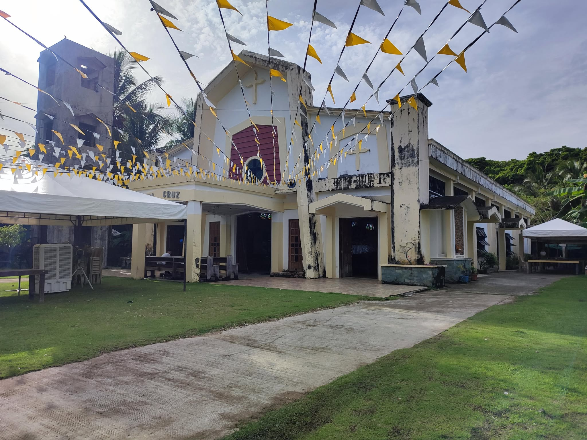
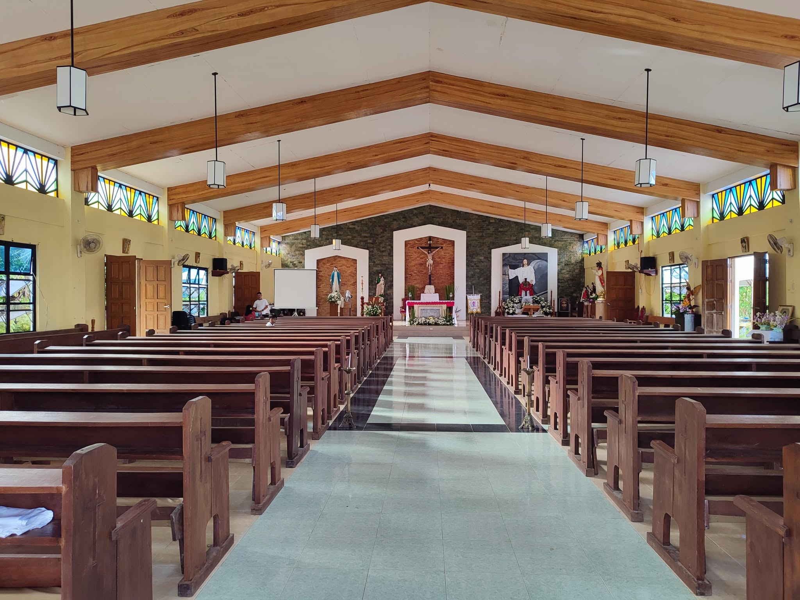

Sta. Cruz Parish
Sta. Cruz Parish serves as the spiritual heart of Barangay Sapao, bringing together residents through worship, festivals, service, and shared tradition. Its annual fiesta is one of the most beloved community events in the barangay, drawing families and visitors from near and far.
Beyond worship, the parish is known for its youth ministry and service programs, keeping the community connected through faith, culture, and mutual care.

Photo gallery


Fees and access
Pricing
Visits to the parish are free, though donations are welcome and appreciated for church maintenance and community support.
How to get there
From Guiuan town proper, travel toward Barangay Sapao and ask for directions to the parish center, which is easy to reach by local road transport.
Contact and opening hours
Masses and parish activities are held regularly, and visitors are welcome to attend services or simply visit during daytime hours. For special events, it is best to confirm the schedule locally.